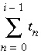
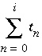

This keyword data block is included mainly to speed up batch-reaction calculations that include kinetic reactions ( KINETICS keyword). The keyword has no effect on transport calculations. By default ( INCREMENTAL_REACTIONS false), for each time t i given by -steps in the KINETICS keyword data block, rates of kinetic reactions are integrated from time 0 to t i . This default repeats the integration over early times for each reaction step even though the early times may be the most CPU-intensive part. If INCREMENTAL_REACTIONS is set to true, the values of t i are the incremental times for which to integrate the rates; each kinetic calculation (denoted by i ) integrates over the time interval from  to  . INCREMENTAL_REACTIONS has a similar effect for -steps in the REACTION data block.
Line 0: INCREMENTAL_REACTIONS [( True or False )]
INCREMENTAL_REACTIONS is the keyword for the data block. If value is true, reaction steps for REACTION and time steps for KINETICS data blocks are incremental amounts of reaction and time that add to previous reactions steps. If value is false, reaction steps and time steps are total amounts of reaction and time, independent of previous reaction steps. Default (if neither true nor false is entered) is true. Initial setting at beginning of run is false.
Frequently, kinetic reactions are faster at early times and slower at later times. The integration of kinetic reactions for the early times is CPU intensive because the rates must be evaluated at many time subintervals to achieve an accurate integration of the rate equations when reactions are fast. If the time steps in the KINETICS data block are 0.1, 1, 10, and 100 s and the time steps are not incremental (default at initialization of a run), then the kinetic reactions will be integrated from 0 to 0.1, 0 to 1, 0 to 10, and 0 to 100 s; the early part of the reactions (0 to 0.1 s) must be integrated for each specified time. By using incremental time steps, the kinetic reactions will be integrated from 0 to 0.1, 0.1 to 1.1, 1.1 to 11.1, and 11.1 to 111.1; the results from the previous time step are used as the starting point for the next time step, and integrating over the same early time interval is avoided.
If the time steps in the KINETICS data block are defined as " -steps 100 in 2 steps" and INCREMENTAL_REACTIONS false, then the kinetic reactions will be integrated from 0 to 50 and 0 to 100 s. By using INCREMENTAL_REACTIONS true, the kinetic reactions will be integrated from 0 to 50 and 50 to 100 s. Although the calculation procedure differs, results of calculations using the " in" form of data input should be the same for INCREMENTAL_REACTIONS true or false.
For consistency, the INCREMENTAL_REACTIONS keyword also has an effect on the interpretation of steps defined in the REACTION data block. If the steps in the REACTION data block were 0.1, 1, 10, and 100 mmol, then by default, solution compositions would be calculated after a total of 0.1, 1, 10, and 100 mmol of reaction had been added to the initial solution. By using incremental reaction steps, solution compositions would be calculated after a total of 0.1, 1.1, 11.1, and 111.1 mmol of reaction had been added.
If the time steps in the REACTION data block are defined as " -steps 1 in 2 steps" and INCREMENTAL_REACTIONS false (default), then the solution composition will be calculated after 0.5 moles of reaction are added to the initial solution and after 1 mole of reaction has been added to the initial solution. By using INCREMENTAL_REACTIONS true, the solution composition will be calculated after 0.5 moles of reaction are added to the initial solution and again after an additional 0.5 moles of reaction are added to the reacted solution. Although the calculation procedure differs, results of calculations using the " in" form of data input should be the same for INCREMENTAL_REACTIONS true or false.
If INCREMENTAL_REACTIONS true, REACTION is defined with a list of steps, and more batch-reaction steps (maximum number of steps defined in KINETICS, REACTION, and REACTION_TEMPERATURE) than REACTION steps are defined, then the last reaction step is repeated for the additional batch-reaction steps. Thus the reaction continues to be added to solution during the final batch-reaction steps. If no additional reaction is desired in these final batch-reaction steps, then additional reaction amounts equal to zero should be entered in the REACTION data block. Similarly, if more batch-reaction steps are defined than kinetic steps, the final time step from the KINETICS data block will be used for the final batch-reaction steps.
If " in" is used in -steps in the REACTION data block and the number of batch-reaction steps is greater than the number of steps defined in the REACTION data block, then the reaction step is zero for REACTION in the remaining batch-reaction steps. Likewise, if " in" is used in -steps in the KINETICS data block, and the number of batch-reaction steps is greater than the number steps defined in the KINETICS data block, then the time step for kinetic reactions in the remaining batch-reaction steps will be zero.
The incremental approach is not implemented for the MIX keyword. If a MIX data block is used, then solutions are mixed only once before any reaction or kinetic steps. REACTION_TEMPERATURE steps are always non-incremental.